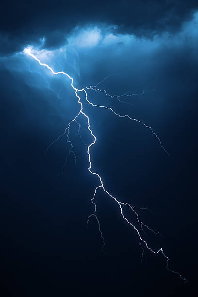

Bu projede, yıldırımların içerdiği devasa enerjiyi yakalayarak kontrollü bir şekilde elektrik enerjisine dönüştürmeyi hedefliyorum. Yıldırımlar çok kısa sürede çok yüksek akım sağlar. Bu enerji uygun sistemlerle depolanabilir veya doğrudan elektrik şebekesine aktarılabilir.
Araştırmalar; yıldırımın potansiyelini değerlendirmek için süper kapasitörler, yüksek voltaj devreleri ve hızlı anahtarlama sistemlerine odaklanmaktadır. Ancak güvenlik her zaman en büyük önceliktir.
 Ana Sayfaya Dön